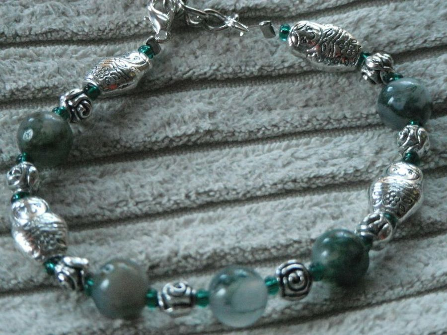
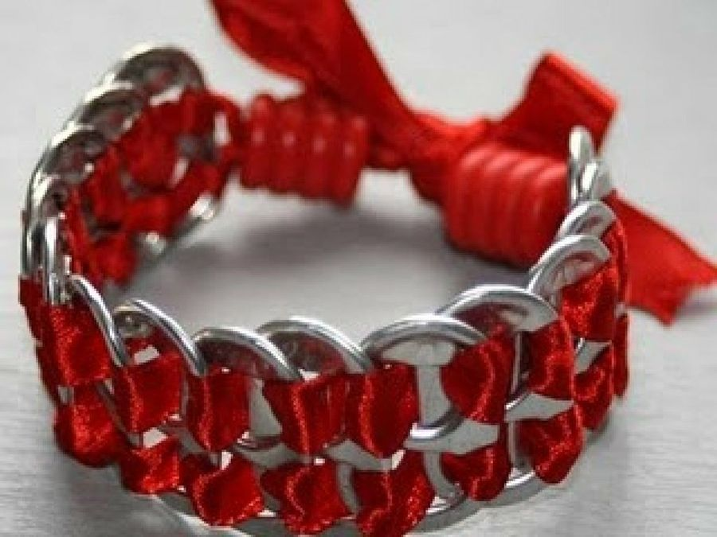
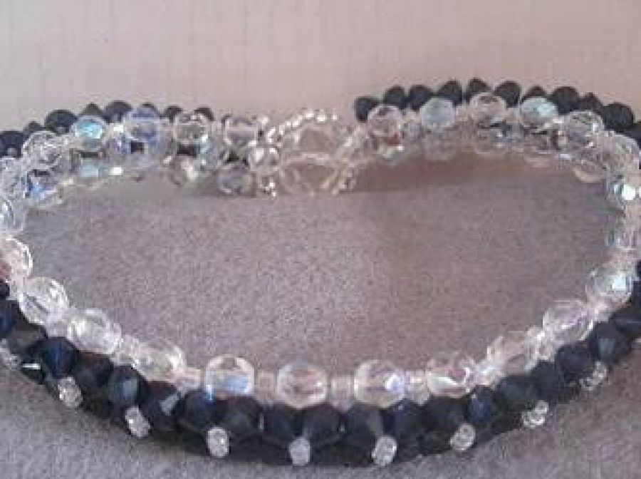
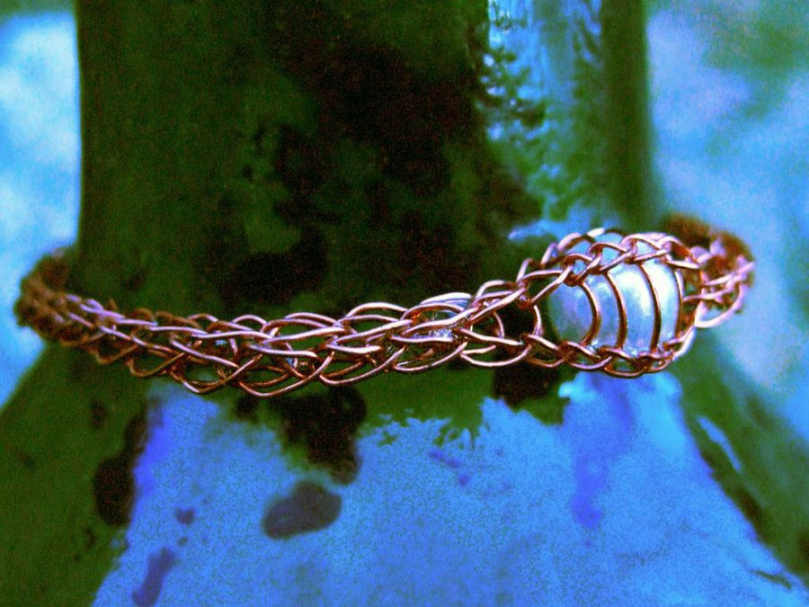
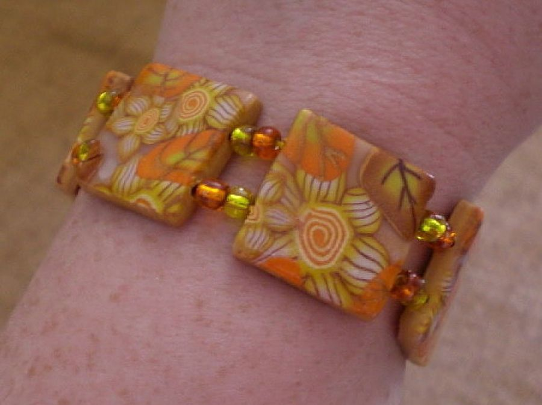
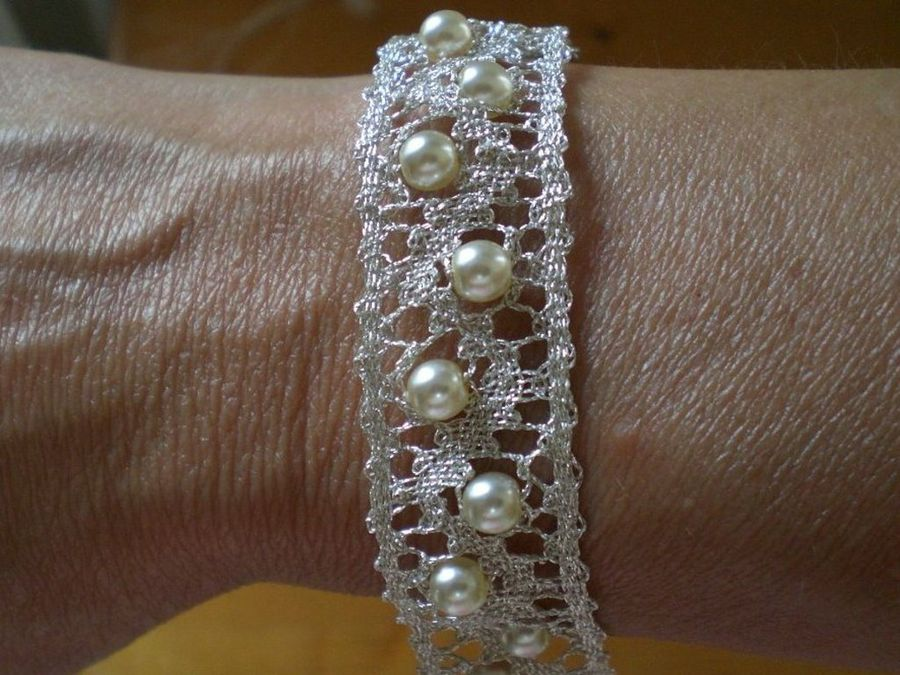
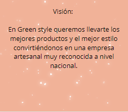
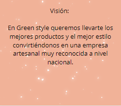

Divertida: los abalorios nos ofrecen un sinfín de combinaciones posibles, usar bolitas de colores, piedras semipreciosas, añadirle tela.

Ecologista: uno de los pilares de las manualidades es reciclar todo lo que esté a nuestro alcance. Uno de los objetos que más posibilidades han dado a nuestras foreras han sido las chapas de las latas de refresco

Innovadora: existen diferentes materiales, novedosos en el mundo de la bisutería pero que aportan grandes resultados, como los alambres o los metales fáciles de moldear. Imaxinarios es toda una experta en este campo

Sencilla: el fimo es una pasta de modelar a la que se puede sacar mucho provecho, sólo tienes que darle forma y hornearla hasta que se endurezca.

Atrevida: los brazaletes de cualquier material se pueden personalizar de muchas formas. Mediante las pinturas podemos crear multitud de diseños, pero sin duda, la técnica que más opciones nos ofrece es, una vez más, el decoupage.

Sofisticada: los cristales de Swarovski aportan a la joyería un toque muy llamativo y refinado gracias al brillo de sus piezas. Además, gracias a su variedad de colores, se pueden crear formas como flores o corazones, y hacer así diseños más serios para ocasiones especiales o juveniles para usar a diario. Kristal65.
 
